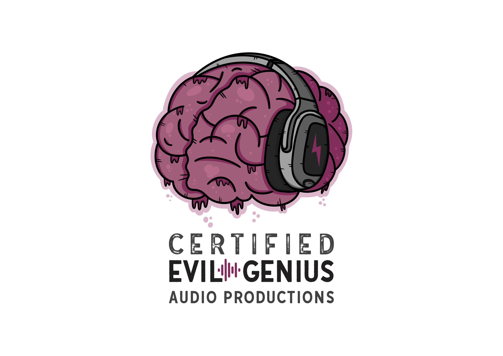
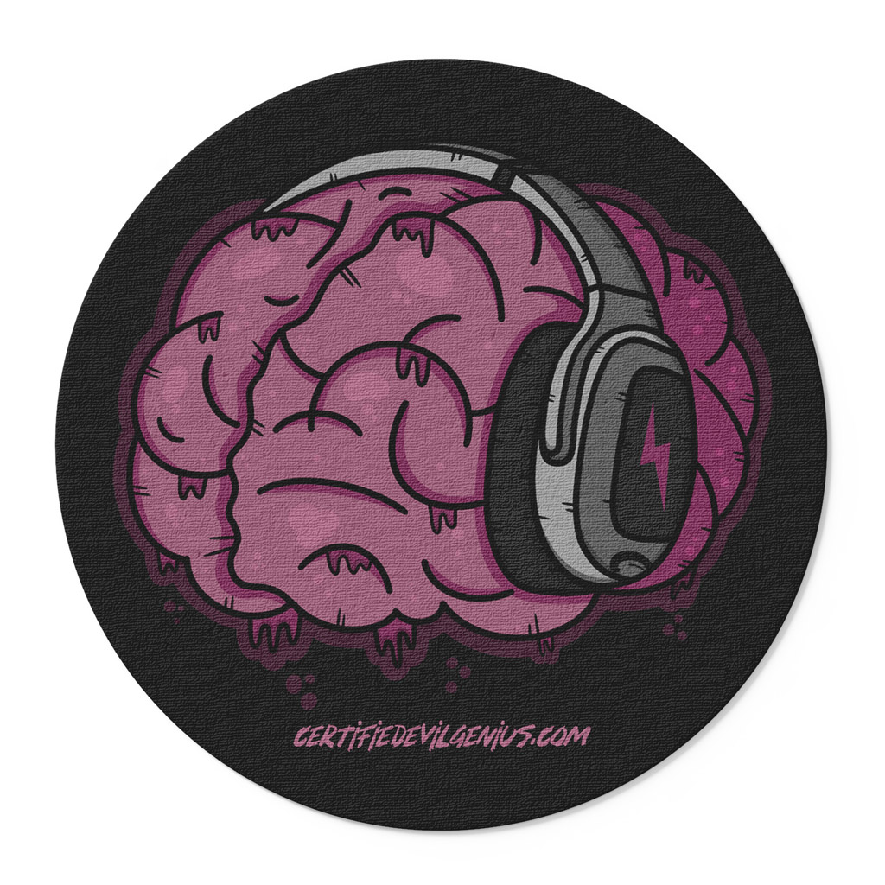
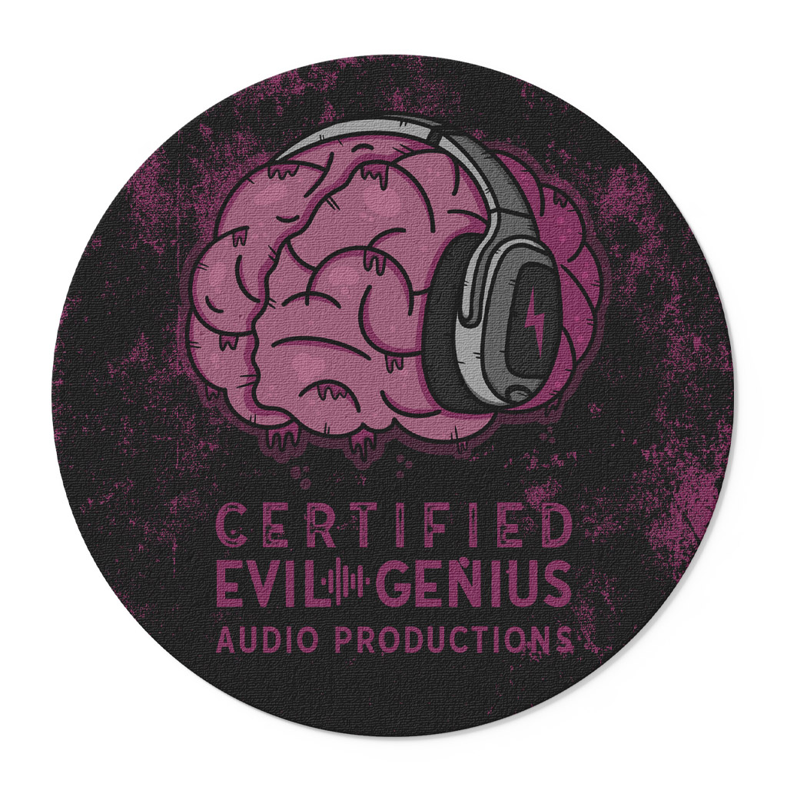
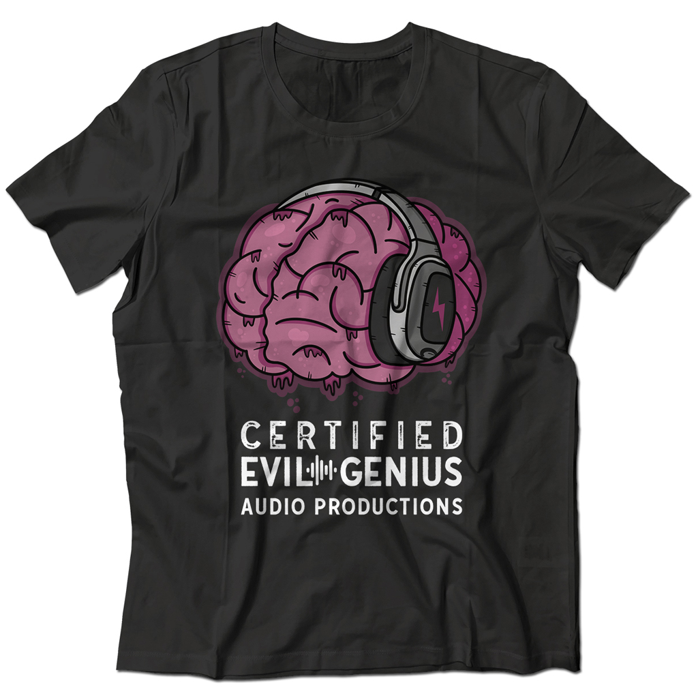
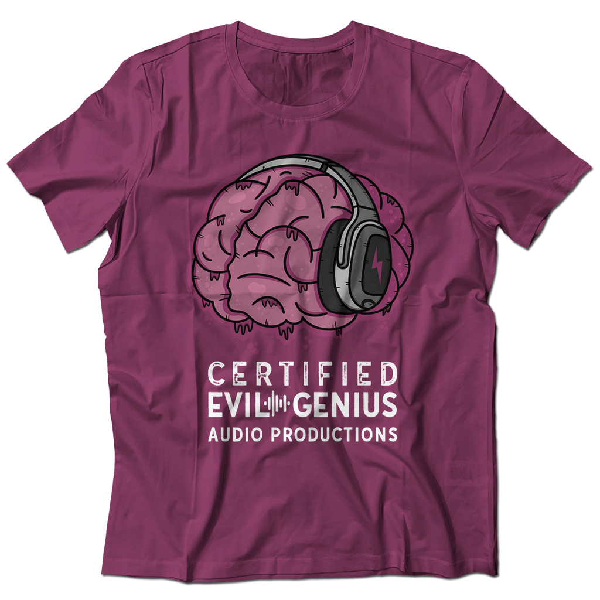

Certified
Evil Genius
Bold brand identity for one of Charleston's top recording studios — logo, stickers, and apparel that live up to the name.

Bold brand identity for one of Charleston's top recording studios — logo, stickers, and apparel that live up to the name.
Certified Evil Genius Audio Productions is one of Charleston, SC's top-tier recording studios — a place where serious artists come to make serious music. When they came to me, they needed a brand identity that could match the level of craft and creativity happening inside their walls. This wasn't a project where I could afford to play it safe. The name alone demanded something bold, something memorable, and something that carried real attitude.
My challenge was to take a name as provocative and personality-driven as 'Certified Evil Genius' and translate it into a visual identity that felt authentic — not gimmicky. The final deliverable included a primary logo design along with a suite of branded graphic assets including stickers and apparel.

The client came in with a clear sense of who they were — a high-end studio with serious technical chops and a creative culture that didn't take itself too seriously. They wanted branding that:
• Felt premium and credible — worthy of the caliber of artists they work with
• Had personality and edge — not another generic studio logo
• Was versatile enough to work across digital, merchandise, and physical applications
• Could be worn with pride — this was a brand people needed to want on a t-shirt
Before I touched a single design tool, I spent time understanding the world the client lived in. I looked at how other recording studios brand themselves — and more importantly, I identified what I didn't want to do. Most studio logos lean on soundwaves, microphones, or music notes. That wasn't going to cut it here.
'Certified Evil Genius' is a statement. It has character. The branding needed to live up to it. I explored the cultural language of genius — think mad scientists, classic villainy, retro badge culture. I also thought about the music industry vernacular around 'certified' — as in certified gold, certified platinum. That gave me a direction: something that felt like a credential, an achievement, a mark of authority. Combined with the irreverence of 'Evil Genius,' I knew I was building toward something that felt both legitimate and a little dangerous.
The logo became the cornerstone of everything. I wanted to create a mark that worked as a unified lockup — something that could stand alone on its own as a symbol of the brand without needing any supporting text to make an impression.
The typography was critical. I wanted letterforms that felt strong and authoritative without being corporate or cold. The name itself carries so much weight that the type needed to frame it rather than compete with it — letting the words do the storytelling while the mark gave it credibility and visual gravity.
I approached the overall aesthetic with a timeless quality in mind. I wanted this to feel like something that could have existed decades ago and still feel relevant today. Badge-style design cues gave it that sense of history and legitimacy, which worked perfectly alongside the playful arrogance of the name.
Once the core logo was locked in, I moved into the brand extensions. This is where a lot of identity projects either come alive or fall apart. A logo is one thing — but when you start putting it on a t-shirt or a sticker, you're asking it to perform in a completely different context.
For the sticker designs, I developed variations that could work in isolation — pieces of the brand world that felt collectible and shareable. Stickers for a recording studio end up everywhere: laptops, instrument cases, studio walls, tour vans. They had to be bold enough to grab attention at a small scale and carry the personality of the brand in a single glance.
The apparel designs were approached the same way I'd approach any merch project — I asked myself whether someone would actually want to wear this. Not just a client handing out branded shirts, but an artist or engineer who genuinely wants to rep where they record. That's a different bar. The designs had to have cultural credibility, not just brand compliance.




The final brand identity gave Certified Evil Genius Audio Productions a visual presence that matched the reputation they'd built inside the studio. The logo is strong, distinctive, and immediately communicates who they are — no explanation needed.
More importantly, the brand system works across every application. From the primary logo to the stickers to the shirts, everything feels like it belongs to the same world. The client walked away with an identity they were proud to put their name on — and one that their artists and clients were proud to wear.
This project was a reminder of why I love branding work at its best: when a name is this good, your job as a designer is to give it a visual home that's worthy of it. I think we got there.